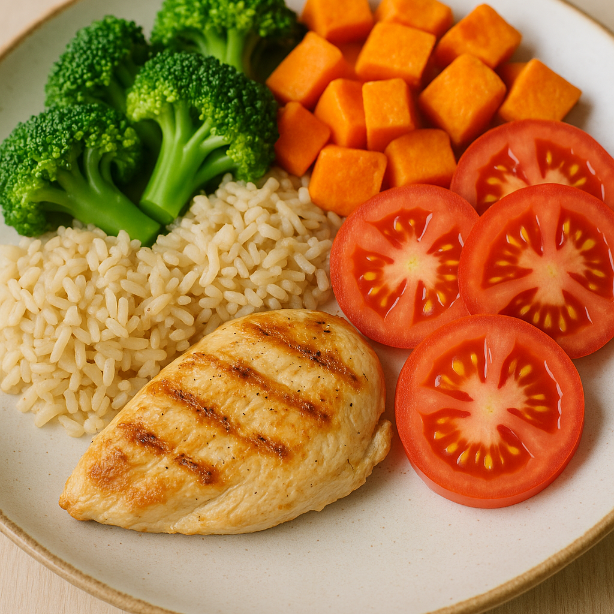

Psychiatry is often associated with overmedication. This article explores how/when medication can be reduced, and how lifestyle changes can sometimes reduce the need for certain medications.
Read MoreArticle Hub
Every month, Awakenings publishes a blog post style article on our website that relates to how Awakenings likes to practice psychiatry, and what makes us really unique. Each article is written with patients in mind, and typically includes some insight into how/when Psychiatry can be helpful.


How Exercise and Nutrition Transform Psychiatry
Discover how daily habits like movement and mindful eating can powerfully support psychiatric treatment and overall mental wellness, often reducing the need for medication.
Read MoreDisclaimer: None of the information in any of these articles should be considered as medical advice. If you have an emergency, please call 911.